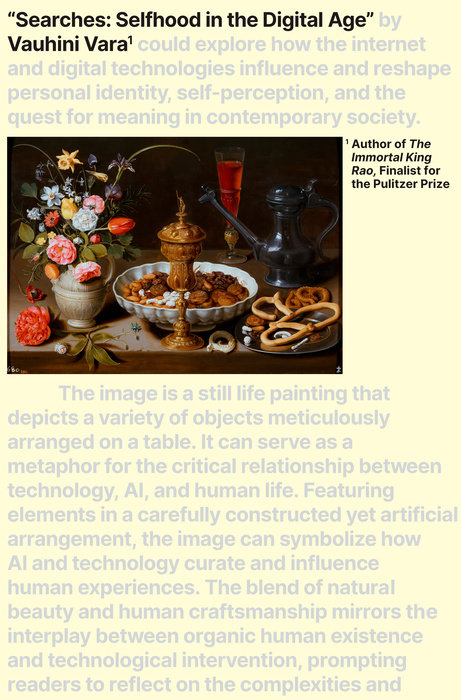
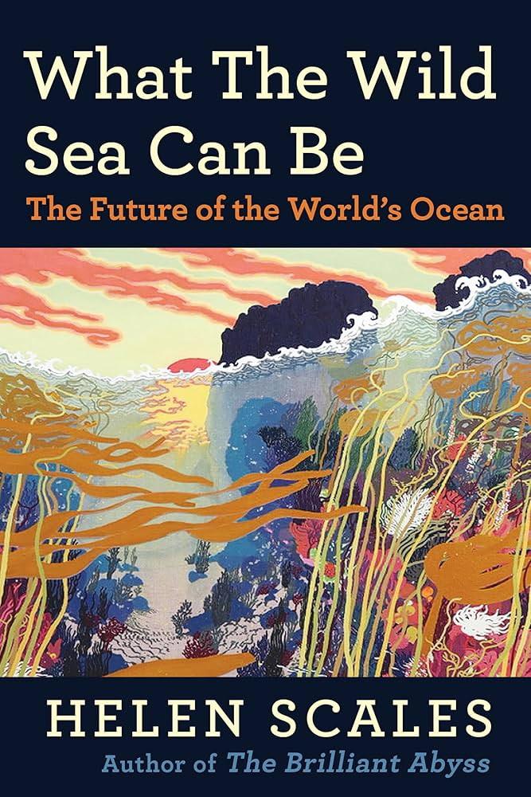

Other Skills + Hobbies
Basic Spanish, butterfly sailing, running, drawing, screen printing, paper mache, crocheting, classical guitar, reading
Recent Reads

Discourse on the influence of technology, culture, and human condition interleaved with the author's own personal narrative

A poignant look into the current state of our ocean and its future in the Anthropocene

A journalist attempts to get closer to a food-loving serial killer, an exploration of misogyny and food culture in Japan